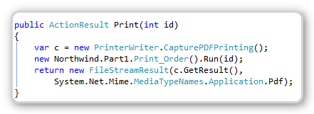
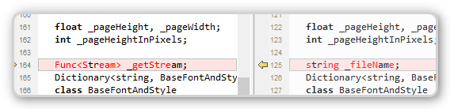
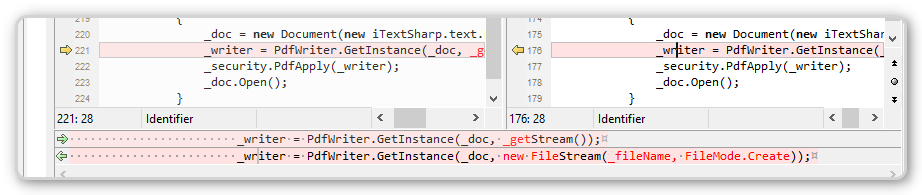
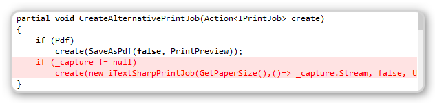

Reusing Migrated Reports on the Web
I’m working now on new and interesting ways to reuse existing/migrated code in web projects.
This article is a part of a series of articles about reusing code from a migrated project in a web project.
To configure and setup an MVC application that reuses migrated code, see Setting up an MVC project that reuses migrated code – this article
Next I recommend you read the following articles in the following order:
- Creating my first MVC page
- Using POCO Objects Based on Migrated Entities
- Poco Creator–automatically create poco object based on entities, (T4 Templates)
- Poco Creator, next step–extending the generated objects
- Reusing Migrated Reports on the Web – this article This time, my goal was to reuse reports that I already had in my application.
For example, in the Northwind application, there is a print button, that prints the current Order.

When the Print button is clicked, it’ll open the Print Preview screen and show the following report.

I want to reuse that report on the web.
To do that, I created a class that alters the existing PrinterWriter, so that when it’s set, it re-routs all printings to an in memory PDF printer.
I’ll show its implementation in a second, but first let’s see how to use it.
I’m using MVC, so all I needed to do is to add a “Print” method to my MVCController:

The first line,instantiates a new instance of the CapturePDFPrinting class (temporary name), which captures all printings and converts them into a PDF.
Then I called the existing (Migrated) class that prints the report. Note that I didn’t have to alter it in any way. Once it’s done, I’m returning an MVC.FileStreamResult with content type PDF.
This is the result in the browser:

That’s it.
For those of you who want to use it, these classes are included as part of a migration project, with the Northwind code sample or with your migrated code.
Now for the under the hood implementation, only read this if you really care about wiring:
First I needed to change the existing PDF printing to support printing to a Stream and not only to a File.
So I changed the _fileName member to be a factory that returns a Stream:

Its usage now uses the StreamFactory instead of creating the stream on the spot: 
I have changed the constructor to receive a StreamFactory and to have an overload for the original implementation.
Then I have added the CapturePrinting class, and a ThreadStatic member to hold it when it’s used:

And finally I altered the CreateAlternativePrintJob class to use the capture class when it’s not null:

Now, only for the current thread, at the current time— every printing will print to an in-memory PDF printer, in which its results are returned immediately to the browser.